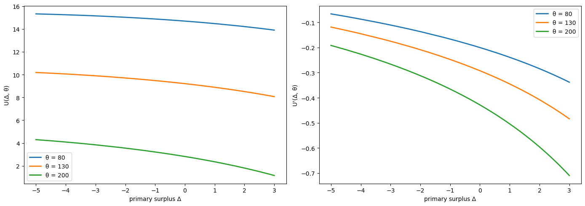
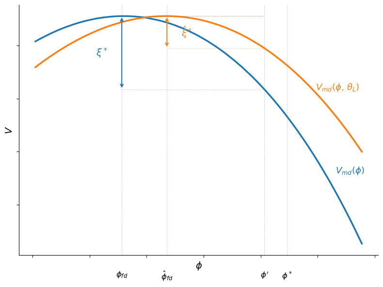
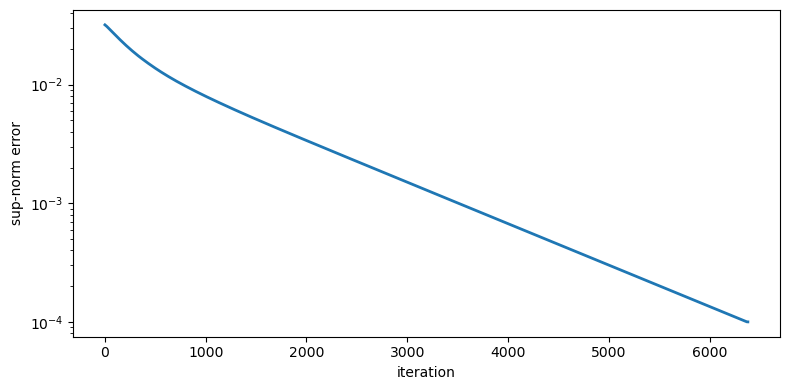
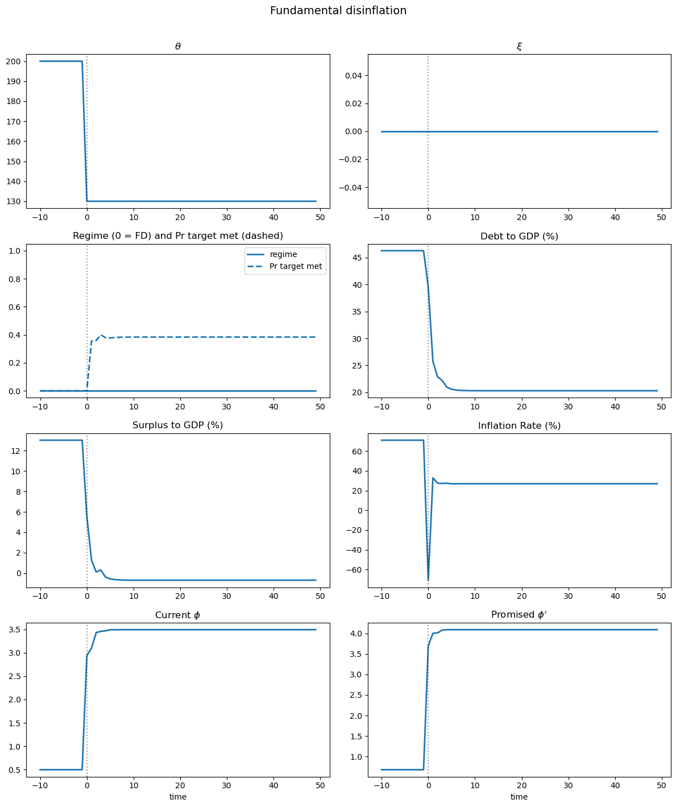
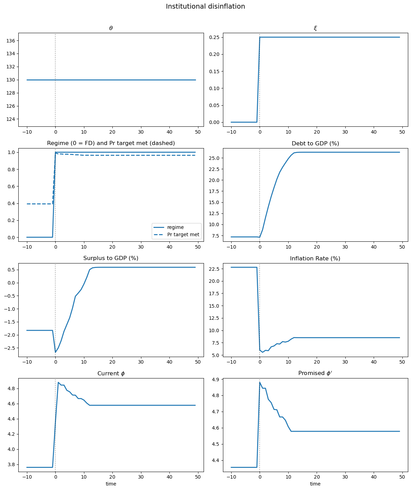
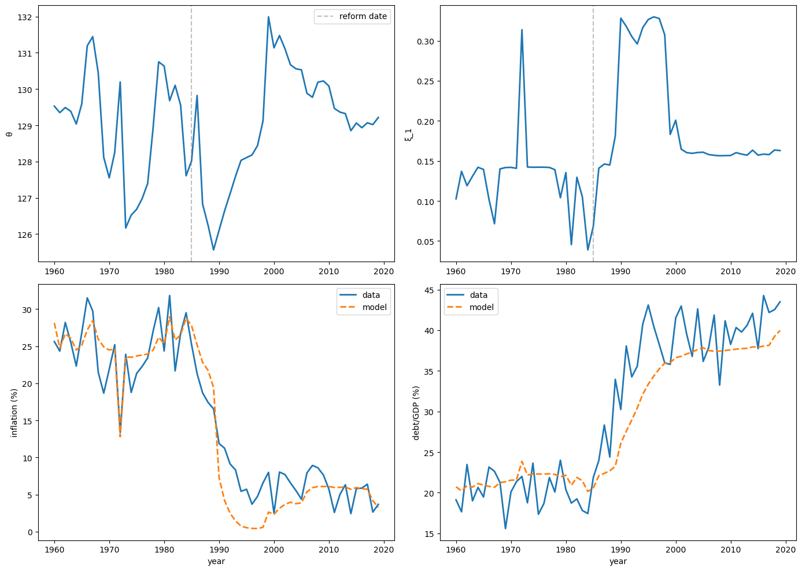
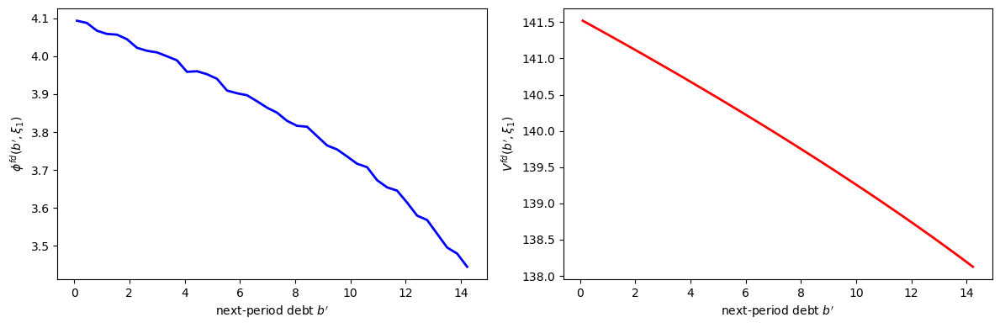
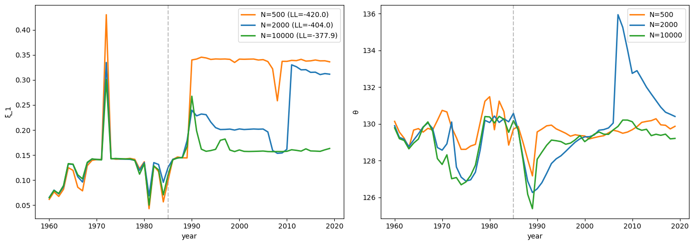

59. Accounting for Monetary and Fiscal Policy#
GPU
This lecture was built using a machine with JAX installed and access to a GPU.
To run this lecture on Google Colab, click on the “rocket” icon at the top of the page, select “Colab”, and set the runtime environment to include a GPU.
To run this lecture on your own machine, you need to install Google JAX.
59.1. Overview#
This lecture studies a model of fiscal and monetary policy interactions developed by Bocola et al. [2026].
The model provides a framework for revisiting some long-standing questions about fiscal dominance versus monetary dominance in a framework that allows for partial commitment to an inflation target.
Note
For an early discussion of “partial commitment” in the context of fiscal and monetary policy, see the concluding section of Lucas and Stokey [1982], the original working paper version of Lucas and Stokey [1983].
In Quantecon’s view, the referees and editors of the Journal of Monetary Economics version made a mistake by insisting that Lucas and Stokey rewrite the concluding section of their paper.
Note
Sargent and Wallace [1981] contrasted “fiscal dominance” and “monetary dominance” as different ways of coordinating monetary and fiscal policy.
They thought about them at the beginning of the Reagan administration, when the 1970s surge in US inflation had not yet been tamed by the monetary-fiscal policies presided over by Paul Volcker.
Sargent and Wallace’s title, “Some Unpleasant Monetarist Arithmetic,” expressed the idea that in the face of a persistent net-of-interest government deficit, efforts to reduce inflation through tight monetary policy work only temporarily, if at all.
That is because they lead to higher government debt and thus greater gross-of-interest government deficits that must be financed in the future.
In the model, a benevolent government that cannot commit finds it attractive to delegate monetary policy to a central bank charged with an inflation target, yet may later override that mandate when it needs seigniorage revenue.
Whether the government honors or breaks its promise depends on two state variables: the fiscal situation (how much debt is outstanding and how urgently the government values public spending) and a random institutional cost that stands in for legal, reputational, and political barriers to overriding the central bank.
As these states evolve, the economy switches endogenously between a monetary-dominant regime, in which the inflation target holds, and a fiscal-dominant regime, in which it does not.
Two polar cases are nested as special cases: the Ramsey allocation emerges when the institutional cost is always prohibitively high, and the Markov equilibrium emerges when it is zero.
The paper distinguishes two ways that a disinflation can occur:
Fundamental disinflation: a reduction in fiscal needs (\(\theta\)) leads inflation and debt to decline together.
Institutional disinflation: an increase in the credibility of the inflation mandate (\(\xi\)) leads inflation to fall while debt rises.
The contrasting comovement of debt and inflation in these types of disinflations allows the authors to create a statistical model that lets them classify observed disinflations into episodes that were driven by fiscal fundamentals or by institutional changes.
The paper applies these ideas to Colombia and Chile, using a particle filter to recover the sequences of fiscal and institutional shocks that are consistent with the observed joint paths of inflation and debt-to-GDP ratios.
This lecture will:
Set up the model environment in a Sargent and Wallace [1981] economy with a household and a government
Describe implementable fiscal and monetary outcomes
Characterize two setups: the Ramsey outcome (full commitment) and the Markov outcome (no commitment)
Formulate a partial-commitment model with endogenous regime switching governed by a stochastic cost \(\xi\) of deviating from the mandate
Write Python code to solve the model numerically
Simulate the two types of disinflation (fundamental and institutional)
Implement an illustrative particle filter on synthetic data
Summarize the paper’s case studies of Colombia and Chile
JAX is used to vectorize the key computations and accelerate value function iteration and particle filtering.
In addition to what’s in Anaconda, this lecture will need the following libraries:
!pip install jax
from typing import NamedTuple
from functools import partial
import jax
import jax.numpy as jnp
from jax import jit, lax, vmap
import numpy as np
import matplotlib.pyplot as plt
jax.config.update("jax_enable_x64", True)
59.2. The economy#
59.2.1. Environment#
Consider an economy that blends elements of Aiyagari et al. [2002] and Calvo [1978] (see also Lucas and Stokey [1983] and Chari and Kehoe [1999]).
Time is discrete, indexed by \(t = 0, 1, \ldots\).
The exogenous state is \(s_t \in \mathcal{S}\), following a Markov process with transition \(\Pr(s_{t+1}|s_t)\).
A representative household has preferences
where
Here
\(c\) is private consumption
\(l\) is labor supply
\(m\) is real money balances
\(g\) is public consumption
\(\nu(l)\) is a strictly increasing and convex labor disutility function
\(v(m)\) and \(u(g)\) are strictly increasing and concave
\(\theta(s)\) is a preference shock to the marginal utility of government spending
\(\beta\) is the household discount factor
The linear production technology is operated by competitive firms, and the resource constraint is \(c(s^t) + g(s^t) \leq l(s^t)\).
The government finances spending \(g\) with linear taxes on labor income, by issuing real uncontingent debt \(b\), and by printing money injected into the economy via open market operations.
The government is benevolent but may have a different discount factor \(\hat\beta \leq \beta\).
59.2.2. Implementable allocations#
Following the insight in Aiyagari [1989] and Aiyagari et al. [2002] (see also QuantEcon lectures Optimal Taxation without State-Contingent Debt, Fluctuating Interest Rates Deliver Fiscal Insurance, and Fiscal Risk and Government Debt), we define the real primary surplus as
We can then define the static indirect utility function over surpluses as
subject to the resource constraint \(c + g \leq l\) and the static implementability constraint \((1 - \nu'(l))\, l - g \geq \Delta\).
This function is well-defined for all surplus values below the maximal surplus implied by the static Laffer curve, \(\Delta \leq \bar\Delta \equiv \max_l (1 - \nu'(l))\,l\).
The indirect utility function \(U(\Delta, s)\) is decreasing and concave in \(\Delta\) for all \(s\), and the marginal disutility of primary surplus is increasing and is affected by the fundamental shocks.
Let \(\phi \equiv M_{t-1}/P_t\) denote real money balances (price of money in terms of goods) and define
The money demand or portfolio balance condition becomes
where \(\mu \equiv M_t / M_{t-1}\) is the gross money growth rate.
The government budget constraint (in normalized form) is
The government’s value is
We now define the model primitives as Python functions.
The labor disutility is \(\nu(l) = \chi\, l^{1+\psi}/(1+\psi)\).
Money utility is \(v(\phi) = \kappa\phi - \eta_m\phi^2\).
Government spending utility is \(u(g) = g^{1-\sigma}/(1-\sigma)\).
The function \(H(\phi) = \phi\,(1 + v'(\phi))\) appears in the money demand condition.
def v_money(φ, κ, η_m):
return κ * φ - η_m * φ**2
def v_money_prime(φ, κ, η_m):
return κ - 2.0 * η_m * φ
def H_func(φ, κ, η_m):
return φ * (1.0 + v_money_prime(φ, κ, η_m))
def u_gov(g, σ):
return jnp.where(
jnp.abs(σ - 1.0) < 1e-10,
jnp.log(g),
g ** (1.0 - σ) / (1.0 - σ),
)
59.3. Policy determination#
59.3.1. The credibility problem#
An important innovation of Bocola et al. [2026] is to model policy determination under partial commitment in the following sense.
The government promises an inflation target \(\pi^*\) (equivalently, a promised value for real balances \(\phi'\)) for next period.
But a next-period government can choose to honor or abrogate the mandate.
The cost of abrogating is modeled as a random variable \(\xi\) that stands in for the various frictions that make overriding a mandate difficult:
reputational losses (see Dovis and Kirpalani [2021])
coordination failures that lead to inferior equilibria
institutional constraints and political costs
When \(\xi\) is always large enough, the mandate is never broken and the Ramsey outcome obtains.
When \(\xi = 0\), the mandate is always broken and a Markov equilibrium results.
The full model nests both extremes.
Unlike the loose commitment framework of Debortoli and Nunes [2010], where the probability of re-optimization is exogenous, here the regime switch is endogenous: the government decides whether to honor or abrogate based on the realized cost.
59.3.2. Recursive formulation#
The state is \(x = (b, \phi, s)\) where \(b\) is inherited real debt, \(\phi\) is the promised real balances, and \(s = (\theta, \xi)\) is the exogenous state.
This recursive formulation builds on Abreu [1988], Chari and Kehoe [1990], and Chang [1998].
Note
For descriptions of these frameworks, see other lectures in this suite of QuantEcon lecture notes, including Ramsey plans, time inconsistency, sustainable plans,competitive equilibria in the Chang model, and sustainable plans in the Chang model.
The economy can be in one of two regimes:
Monetary dominance (MD, \(\eta = 1\)): the government honors the inflation target.
Fiscal dominance (FD, \(\eta = 0\)): the government ignores the target and chooses \(\phi\) to maximize short-run welfare.
The idea of regime switching between monetary and fiscal dominance builds on Leeper [1991], Bianchi [2013], and Bianchi and Ilut [2017].
The present model differs in two important ways: the switches are endogenous (they emerge from the government’s optimization rather than from an exogenous Markov chain), and the policy chosen within each regime is also endogenous (not governed by fixed monetary and fiscal rules).
The regime indicator is
The inflation target summarized by a promised \(\phi\) is satisfied if and only if
Deviating from the target allows the government to attain the maximum utility possible net of the cost \(\xi\).
A cost \(\xi\) greater than the cutoff \(\xi^*\) is required for the target to be sustained.
More ambitious inflation targets (closer to the Ramsey value \(\phi^*\)) are harder to achieve because the cutoff \(\xi^*\) is larger.
The target is also easier to achieve when the marginal utility of government expenditure \(\theta\) is lower, because positive surpluses are less valuable.
Fig. 59.2 below illustrates this logic.
Monetary dominance – the government solves:
where maximization is subject to the budget constraint \(\Delta = b + \phi - \beta b' - \mu\phi\) and the money demand condition \(\mu\phi = J(b', \phi', s)\).
Fiscal dominance – the government’s problem adds current \(\phi\) to its choice set:
where the static first-order necessary condition with respect to \(\phi\) is \(-U'(\Delta, \theta) = v'(\phi^{fd})\).
The expected marginal value of real balances is
The default parameter values below are calibrated to an average of Colombia and Chile 1960–2017, following Table 1 of Bocola et al. [2026].
In our implementation, the preference parameter \(\theta\) is held fixed inside each model instance; we study fundamental disinflation by comparing solutions across different \(\theta\) values.
# Default parameter values
β, β_hat = 0.95, 0.92
χ, ψ, σ = 0.015, 1.0, 2.0
κ, η_m = 0.70, 0.06
λ_gumbel = 20.0
φ_star = κ / (2.0 * η_m)
59.4. Two benchmark outcomes#
Before turning to the full model, it is useful to analyze two polar benchmarks.
59.4.1. The Ramsey outcome (full commitment)#
Under full commitment (\(\xi\) always large enough so that \(\eta = 1\)), the government solves
subject to \(\Delta = b + \phi - \beta b' - \beta \sum_{s'} \Pr(s'|s) H(\phi'(s'))\).
Note
The choice of \(\phi'(s')\) here is allowed to be state-contingent – the Ramsey planner can promise different real balances in different future states.
The partial-commitment model studied below instead restricts the promise to a single \(\phi'\) that does not vary with \(s'\).
We present the Ramsey problem in its more general form as a benchmark; the restriction to a non-contingent promise is what makes abrogation tempting and gives rise to the credibility problem.
Under the Ramsey outcome, there is a trade-off between following the Friedman rule and making real debt state contingent.
If the volatility of the marginal value of government expenditures is sufficiently small, the benefits of making the real debt state contingent are small relative to the cost of anticipated inflation and it is optimal to set \(\phi(s') = \phi^*\) for all \(s'\) next period.
Key properties:
For the quadratic specification \(v(\phi) = \kappa\phi - \eta_m\phi^2\), the satiation point is \(\phi^* = \kappa/(2\eta_m)\).
Under the conditions of Proposition 3 of the paper, the Ramsey outcome has a fixed inflation level \(1 + \pi^R = \beta H(\phi^*) / \phi^*\) that does not depend on fiscal fundamentals – the level of debt and \(\theta\).
Surpluses and real debt follow the Euler equation \(-U'(\Delta, s) = \frac{\hat\beta}{\beta} \sum_{s'} \Pr(s'|s) [-U'(\Delta', s')]\).
59.4.2. The Markov outcome (no commitment)#
The polar opposite case in Bocola et al. [2026] is one in which the government has no ability to commit to inflation, so that a Markov equilibrium obtains.
Setting \(\xi(s) = 0\) for all \(s\) makes the fiscal-dominant regime always optimal.
Because the promise \(\phi'\) is never honored, it drops out of the problem.
The problem reduces to
subject to \(\Delta = b + \phi - \beta b' - \beta \sum_{s'} \Pr(s'|s) H(\phi^M(b', s'))\).
Key properties of the Markov outcome:
The static optimality condition \(-U'(\Delta, \theta) = v'(\phi^{fd})\) equates the marginal benefit of real balances to the marginal cost of the primary surplus, so the model predicts a higher price level (lower real balances) when the marginal cost of the surplus is high.
Inflation responds strongly to fiscal pressures – it is high on average, volatile, and closely related to fiscal considerations.
Debt capacity is sharply limited – as shown in the paper, the term \(\frac{\partial J(b', \phi', s)}{\partial b'}/\beta\) is negative, effectively acting as a tax on debt issuance and pushing equilibrium debt below the Ramsey level.
In the deterministic case with \(\beta = \hat\beta\): real debt converges to zero while the Ramsey outcome sustains positive debt levels (Appendix B of the paper).
The full model interpolates between these two extremes depending on the cost \(\xi_t\).
We compute the indirect utility \(U(\Delta, \theta)\) from the static problem
With \(\nu(l) = \chi\,l^{1+\psi}/(1+\psi)\), the Laffer curve gives tax revenue \(T(l) = (1 - \chi\,l^\psi)\,l\).
The first-order conditions are \(\theta\,u'(g) = 1 + \lambda\) and \((1 - \nu'(l))(1+\lambda) = \lambda\,\nu''(l)\,l\), where \(\lambda\) is the multiplier on the surplus constraint.
We bisect on \(\lambda \geq 0\) to find the optimal \((l, g)\) for given \((\Delta, \theta)\).
By the envelope theorem, \(U'(\Delta) = -\lambda\).
The following code implements this procedure, returning both \(U(\Delta, \theta)\) and \(U'(\Delta, \theta) = -\lambda\).
# Large negative value used to mark infeasible allocations
PENALTY = -1e12
@jit
def indirect_utility(Δ, θ, χ, ψ, σ):
"""
Compute U(Δ, θ) and U'(Δ, θ) by bisection on the multiplier λ.
"""
g_star = θ ** (1.0 / σ)
l_star = (1.0 / χ) ** (1.0 / ψ)
l_peak = (1.0 / ((1.0 + ψ) * χ)) ** (1.0 / ψ)
T_max = (1.0 - χ * l_peak**ψ) * l_peak
def bisect_cond(bounds):
lo, hi = bounds
return (hi - lo) > 1e-4
def bisect_body(bounds):
lo, hi = bounds
mid = 0.5 * (lo + hi)
g = (θ / (1.0 + mid)) ** (1.0 / σ)
denom = jnp.maximum(χ * (1.0 + mid * (1.0 + ψ)), 1e-15)
l = jnp.maximum((1.0 + mid) / denom, 1e-15) ** (1.0 / ψ)
surplus = (1.0 - χ * l**ψ) * l - g
return (
jnp.where(surplus <= Δ, mid, lo),
jnp.where(surplus > Δ, mid, hi),
)
# λ in [0, 1000] covers from unconstrained to peak of Laffer curve
lo, hi = lax.while_loop(bisect_cond, bisect_body, (0.0, 1000.0))
λ_opt = 0.5 * (lo + hi)
g_opt = (θ / (1.0 + λ_opt)) ** (1.0 / σ)
denom = jnp.maximum(χ * (1.0 + λ_opt * (1.0 + ψ)), 1e-15)
l_opt = jnp.maximum((1.0 + λ_opt) / denom, 1e-15) ** (1.0 / ψ)
U_constrained = (
l_opt
- g_opt
- χ * l_opt ** (1.0 + ψ) / (1.0 + ψ)
+ θ * u_gov(g_opt, σ)
)
U_unconstrained = (
l_star
- χ * l_star ** (1.0 + ψ) / (1.0 + ψ)
- g_star
+ θ * u_gov(g_star, σ)
)
unconstrained = Δ <= -g_star
infeasible = Δ >= 0.99 * T_max
U_val = jnp.where(unconstrained, U_unconstrained,
jnp.where(infeasible, PENALTY, U_constrained))
U_prime = jnp.where(unconstrained, 0.0,
jnp.where(infeasible, PENALTY, -λ_opt))
return U_val, U_prime
Let’s plot \(U(\Delta, \theta)\) and \(U'(\Delta, \theta)\) for a range of \(\Delta\) values and three different \(\theta\) values.
Δ_grid = jnp.linspace(-5.0, 3.0, 300)
θ_vals = [80.0, 130.0, 200.0]
iu_vec = vmap(indirect_utility, in_axes=(0, None, None, None, None))
fig, axes = plt.subplots(1, 2, figsize=(14, 5))
for θ_val in θ_vals:
U_vals, U_primes = iu_vec(Δ_grid, θ_val, χ, ψ, σ)
mask = U_vals > PENALTY
axes[0].plot(Δ_grid[mask], U_vals[mask], lw=2,
label=f'θ = {θ_val:.0f}')
axes[1].plot(Δ_grid[mask], U_primes[mask], lw=2,
label=f'θ = {θ_val:.0f}')
axes[0].set_xlabel('primary surplus Δ')
axes[0].set_ylabel('U(Δ, θ)')
axes[0].legend()
axes[1].set_xlabel('primary surplus Δ')
axes[1].set_ylabel("U'(Δ, θ)")
axes[1].legend()
plt.tight_layout()
plt.show()

Fig. 59.1 Indirect utility and surplus costs#
The left panel confirms that \(U(\Delta, \theta)\) is decreasing and concave in \(\Delta\): higher surpluses are costly because they require more distortionary taxation.
The right panel shows the marginal cost of surpluses \(U'(\Delta, \theta) < 0\), which becomes more negative as \(\Delta\) approaches the peak of the Laffer curve.
Higher \(\theta\) shifts the curves because greater social value of government spending makes running a surplus even more costly.
59.4.3. Credibility of inflation targets#
We can now illustrate the credibility condition from the recursive formulation.
For a given level of inherited debt \(b\) and optimal continuation choices, the value of entering the period with real balances \(\phi\) is approximately
where \(D = b - \beta b' - \text{seigniorage}\) collects the non-\(\phi\) terms in the surplus \(\Delta\).
This is hump-shaped in \(\phi\): low \(\phi\) sacrifices money utility while high \(\phi\) forces a large, costly surplus.
Under fiscal dominance the government picks \(\phi^{fd}\) to maximize this expression, so \(V^{fd} = \max_\phi V^{md}(\phi)\).
The cutoff cost \(\xi^* = V^{fd} - V^{md}(\phi')\) is the temptation to deviate from the promised \(\phi'\).

Fig. 59.2 Credibility of inflation targets#
The blue curve plots \(V^{md}(\phi) = U(\phi + D,\, \theta) + v(\phi)\) for baseline fiscal pressure \(\theta\), and the orange curve for a lower value \(\theta_L\).
Each curve peaks at the corresponding \(\phi^{fd}\), the level of real balances chosen under fiscal dominance.
The gap \(\xi^*\) between the peak (the fiscal-dominance value \(V^{fd}\)) and the value at the promised \(\phi'\) is the minimum institutional cost needed to sustain the inflation target.
With lower fiscal pressure (orange), the gap shrinks: the target becomes easier to sustain.
59.5. The full model with Gumbel shocks#
Following the paper’s computational approach, the cost \(\xi\) is decomposed as
where \(\xi_{1,t}\) is a persistent component and \(\xi^{fd}_t\), \(\xi^{md}_t\) are i.i.d. Gumbel shocks with mean zero.
The persistent component \(\xi_{1,t}\) follows a Markov chain on \([0, \bar\xi]\) with the following transition probabilities:
The parameter \(\alpha\) controls persistence, \(\alpha_l\) is the probability of resetting to zero (making deviation costless), and \(\bar\xi\) is a large upper bound.
The Gumbel specification delivers a logit formula for the probability of monetary dominance:
and a smooth log-sum-exp formula for the expected continuation value:
This makes the value function differentiable and the numerical solution well behaved.
We discretize \(\xi_1\) via the paper’s Markov chain on \([0, \bar\xi]\), then build grids for total liabilities \(B\), debt \(b'\), and promised real balances \(\phi'\).
def build_ξ_grid(n_ξ, α_l, α, ξ_bar):
"""
Build the paper's persistent credibility-state process on [0, ξ_bar].
"""
grid = np.linspace(0.0, ξ_bar, n_ξ)
P = np.full((n_ξ, n_ξ), (1.0 - α_l - α) / n_ξ)
for i in range(n_ξ):
P[i, 0] += α_l
P[i, i] += α
P /= P.sum(axis=1, keepdims=True)
return jnp.asarray(grid), jnp.asarray(P)
59.6. Computational algorithm#
Because the budget constraint depends on \(b\) and \(\phi\) only through their sum, the problem can be written in terms of a single endogenous state variable \(B = b + \phi\) (total real government liabilities), as described in Appendix C of Bocola et al. [2026].
We define a reduced continuation value \(W(B, s_1)\) that strips the current-period money utility \(v(\phi)\) out of the recursive problem.
The full value of entering a period with state \((b, \phi, s_1)\) is recovered as \(v(\phi) + W(b + \phi, s_1)\) under monetary dominance, and the fiscal-dominance value is \(V^{fd}(b', s_1') = \max_{\phi}\left[W(b' + \phi, s_1') + v(\phi)\right]\).
The function \(W(B, s_1)\) satisfies
where maximization is subject to
where \(\phi^{fd}(b, s)\) is the solution to the static FOC \(-U'(\Delta, \theta) = v'(\phi^{fd})\) under fiscal dominance.
The algorithm is:
Initialize with a guess \(W_0(B, s_1)\)
For iteration \(n\):
Compute \(\phi^{fd}\) and \(\bar\eta\) from the logit formula and the fiscal-dominance FOC
Compute the Bellman update \(W_{n+1}\) from the value function equation above
Iterate until \(\|W_{n+1} - W_n\| < \varepsilon\)
The implementation fixes \(\theta\) inside each model instance, uses multiple \(\xi_1\) states, and adopts the quadratic money-utility specification.
Appendix C of the paper defines fiscal dominance recursively by
The function fd_from_continuation recovers \(\phi^{fd}\) by searching over a \(\phi\) grid and applying quadratic refinement around the grid maximum.
Linear interpolation via jnp.interp evaluates \(W(B, \xi)\) at off-grid points.
The expectation over \(\xi'\) is a matrix multiply against \(P_\xi\) via jnp.einsum, the search over \((b', \phi')\) is a vectorized argmax, and the VFI loop uses lax.while_loop.
All parameters, grids, the transition matrix, and a precomputed table of \(U(\Delta)\) values are stored in a DovisModel named tuple.
class DovisModel(NamedTuple):
β: float
β_hat: float
χ: float
ψ: float
σ: float
κ: float
η_m: float
θ: float
λ: float
φ_star: float
B_grid: jnp.ndarray
b_prime_grid: jnp.ndarray
φ_grid: jnp.ndarray
ξ_grid: jnp.ndarray
P_ξ: jnp.ndarray
Δ_fine: jnp.ndarray
U_fine: jnp.ndarray
H_φ: jnp.ndarray
def create_model(
*,
β=0.95,
β_hat=0.92,
χ=0.015,
ψ=1.0,
σ=2.0,
κ=0.70,
η_m=0.06,
θ=130.0,
λ=20.0,
α_l=0.005,
α=0.99,
ξ_bar=0.5,
n_B=40,
n_φ=40,
n_ξ=9,
B_max=20.0,
):
"""
Create the reduced-form model.
θ is fixed inside each model instance; fundamental disinflation
is studied by comparing solutions across θ values.
"""
# Satiation point for real balances
φ_star = κ / (2.0 * η_m)
# Stay below satiation
φ_lo, φ_hi = 0.5, 0.99 * φ_star
B_grid = jnp.linspace(0.1, B_max, n_B)
# Max debt consistent with B_max and φ_hi
b_bar = max(B_max - float(φ_hi), 0.1)
b_prime_grid = jnp.linspace(0.1, b_bar, n_B)
φ_grid = jnp.linspace(φ_lo, φ_hi, n_φ)
ξ_grid, P_ξ = build_ξ_grid(n_ξ, α_l, α, ξ_bar)
# Wide range covering the full Laffer curve
Δ_fine = jnp.linspace(-50.0, 20.0, 2500)
U_fine, _ = vmap(lambda d: indirect_utility(d, θ, χ, ψ, σ))(Δ_fine)
H_φ = H_func(φ_grid, κ, η_m)
return DovisModel(
β=β, β_hat=β_hat, χ=χ, ψ=ψ, σ=σ, κ=κ, η_m=η_m,
θ=θ, λ=λ, φ_star=φ_star,
B_grid=B_grid, b_prime_grid=b_prime_grid, φ_grid=φ_grid,
ξ_grid=ξ_grid, P_ξ=P_ξ, Δ_fine=Δ_fine, U_fine=U_fine,
H_φ=H_φ,
)
The code below defines the Bellman operator T(W, model) from three building blocks.
fd_from_continuation evaluates \(W(b'+\phi, \xi') + v(\phi)\) for every \((b', \phi, \xi')\) triple, finds the \(\phi\) that maximizes it (with quadratic refinement), and returns \(V^{fd}\), \(\phi^{fd}\), \(H^{fd}\), and the full \(V^{md}\) array.
compute_continuation calls fd_from_continuation, then computes the logit probability \(\bar\eta\), the expected continuation \(\Omega\) (via log-sum-exp), and the money-demand term \(J\) (via jnp.einsum against \(P_\xi\)).
bellman_rhs uses these to evaluate \(\Delta = B - \beta b' - J\) and looks up \(U(\Delta)\) for every candidate \((b', \phi')\), returning the full RHS array.
T takes the max over choices.
def interp_B_values(B_points, B_grid, values):
"""
Linearly interpolate values(B, ξ) over B for each ξ state.
"""
flat = jnp.ravel(B_points)
interp_cols = vmap(
lambda col: jnp.interp(flat, B_grid, col),
in_axes=1,
out_axes=0,
)(values)
return jnp.moveaxis(
interp_cols.reshape(values.shape[1], *B_points.shape),
0,
-1,
)
def fd_from_continuation(W, B_grid, b_prime_grid, φ_grid, κ, η_m):
"""
Recover V^fd and φ^fd from max_φ [W(b' + φ, ξ) + v(φ)].
Uses quadratic refinement around the grid maximum for smoother policies.
"""
B_choices = b_prime_grid[:, None] + φ_grid[None, :]
W_choices = interp_B_values(B_choices, B_grid, W)
V_choices = W_choices + v_money(φ_grid, κ, η_m)[None, :, None]
best_idx = jnp.argmax(V_choices, axis=1)
idx = best_idx[:, None, :]
n_φ = φ_grid.shape[0]
idx_lo = jnp.clip(best_idx - 1, 0, n_φ - 1)[:, None, :]
idx_hi = jnp.clip(best_idx + 1, 0, n_φ - 1)[:, None, :]
v_lo = jnp.take_along_axis(V_choices, idx_lo, axis=1).squeeze(1)
v_0 = jnp.take_along_axis(V_choices, idx, axis=1).squeeze(1)
v_hi = jnp.take_along_axis(V_choices, idx_hi, axis=1).squeeze(1)
denom = v_lo - 2.0 * v_0 + v_hi
offset = jnp.where(
denom < -1e-20,
jnp.clip(0.5 * (v_lo - v_hi) / denom, -0.5, 0.5),
0.0,
)
dφ = φ_grid[1] - φ_grid[0]
φ_fd_raw = jnp.take_along_axis(
jnp.broadcast_to(φ_grid[None, :, None], V_choices.shape),
idx,
axis=1,
).squeeze(1)
φ_fd = jnp.clip(φ_fd_raw + offset * dφ, φ_grid[0], φ_grid[-1])
V_fd = v_0 - (v_lo - v_hi) ** 2 / jnp.where(
denom < -1e-20, 8.0 * denom, -8.0,
)
V_fd = jnp.where(denom < -1e-20, V_fd, v_0)
H_fd = H_func(φ_fd, κ, η_m)
return V_choices, V_fd, φ_fd, H_fd
def _continuation_on_grid(W, model, bp_grid, φ_grid, H_φ):
"""Compute continuation objects on a (b', φ') grid."""
V_md, V_fd, φ_fd, H_fd = fd_from_continuation(
W, model.B_grid, bp_grid, φ_grid,
model.κ, model.η_m,
)
η_bar = jax.nn.sigmoid(
model.λ * (V_md - V_fd[:, None, :] + model.ξ_grid[None, None, :])
)
H_comb = (
η_bar * H_φ[None, :, None]
+ (1.0 - η_bar) * H_fd[:, None, :]
)
J = model.β * jnp.einsum("abj,kj->abk", H_comb, model.P_ξ)
Ω = jnp.logaddexp(
model.λ * V_md,
model.λ * (V_fd[:, None, :] - model.ξ_grid[None, None, :]),
) / model.λ
EV = jnp.einsum("abj,kj->abk", Ω, model.P_ξ)
return EV, J, V_fd, H_fd, V_md, η_bar, φ_fd
def compute_continuation(W, model):
"""Compute continuation objects on the model's coarse grid."""
return _continuation_on_grid(
W, model, model.b_prime_grid, model.φ_grid, model.H_φ
)
def bellman_rhs(W, model):
EV, J, _, _, _, _, _ = compute_continuation(W, model)
Δ = (
model.B_grid[None, None, :, None]
- model.β * model.b_prime_grid[:, None, None, None]
- J[:, :, None, :]
)
U_all = jnp.interp(Δ.ravel(), model.Δ_fine, model.U_fine).reshape(Δ.shape)
in_range = (Δ > model.Δ_fine[0]) & (Δ < model.Δ_fine[-1])
U_all = jnp.where(in_range, U_all, PENALTY)
val = U_all + model.β_hat * EV[:, :, None, :]
n_bp = model.b_prime_grid.shape[0]
n_φ = model.φ_grid.shape[0]
return val.reshape(n_bp * n_φ, model.B_grid.shape[0], model.ξ_grid.shape[0])
def T(W, model):
return jnp.max(bellman_rhs(W, model), axis=0)
59.6.1. Solving the model#
solve_model runs value function iteration using lax.while_loop, applying a dampened Bellman operator \(W_{n+1} = \omega\, T(W_n) + (1 - \omega)\, W_n\) with \(\omega = 0.01\), terminating when the sup-norm update error falls below tol or after max_iter iterations.
extract_policies then re-evaluates the Bellman RHS on a choice grid that is 3\(\times\) denser in both \(b'\) and \(\phi'\).
def solve_model(model, tol=1e-4, max_iter=10_000, damp=0.01,
log_period=10, verbose=True):
"""Solve by dampened VFI: W_{n+1} = damp * T(W_n) + (1 - damp) * W_n.
Returns (W, error_log).
"""
U0, _ = indirect_utility(0.0, model.θ, model.χ, model.ψ, model.σ)
W_init = jnp.full(
(len(model.B_grid), len(model.ξ_grid)),
U0 / (1.0 - model.β_hat),
)
log_size = max_iter // log_period + 1
@jit
def run_vfi(W0):
err_log = jnp.full(log_size, jnp.nan)
def cond(state):
W, err, i, _ = state
return (err > tol) & (i < max_iter)
def body(state):
W, _, i, err_log = state
W_new = damp * T(W, model) + (1.0 - damp) * W
err = jnp.max(jnp.abs(W_new - W))
log_idx = i // log_period
err_log = err_log.at[log_idx].set(err)
return W_new, err, i + 1, err_log
W, err, n, err_log = lax.while_loop(
cond, body, (W0, jnp.inf, 0, err_log)
)
return W, err, n, err_log
W, err, n_iters, err_log = run_vfi(W_init)
W.block_until_ready()
if verbose:
bellman_error = float(jnp.max(jnp.abs(T(W, model) - W)))
if bellman_error < tol:
print(f"Converged in {int(n_iters)} iterations "
f"(Bellman error: {bellman_error:0.2e})")
else:
print(f"Did not converge (Bellman error: {bellman_error:0.2e})")
return W, np.asarray(err_log)
@partial(jit, static_argnums=(2, 3))
def extract_policies(W, model, refine_b=3, refine_φ=3):
"""
Extract policy functions on a dense choice grid from the converged W.
"""
n_B = len(model.B_grid)
n_φ_coarse = len(model.φ_grid)
n_ξ = len(model.ξ_grid)
n_bp = n_B * refine_b
n_φ = n_φ_coarse * refine_φ
bp_grid = jnp.linspace(
model.b_prime_grid[0], model.b_prime_grid[-1], n_bp)
φ_grid = jnp.linspace(model.φ_grid[0], model.φ_grid[-1], n_φ)
H_φ_dense = H_func(φ_grid, model.κ, model.η_m)
EV, J, V_fd, H_fd, V_md, η_bar, φ_fd = _continuation_on_grid(
W, model, bp_grid, φ_grid, H_φ_dense,
)
Δ = (
model.B_grid[None, None, :, None]
- model.β * bp_grid[:, None, None, None]
- J[:, :, None, :]
)
U_all = jnp.interp(
Δ.ravel(), model.Δ_fine, model.U_fine).reshape(Δ.shape)
in_range = (Δ > model.Δ_fine[0]) & (Δ < model.Δ_fine[-1])
U_all = jnp.where(in_range, U_all, PENALTY)
val = U_all + model.β_hat * EV[:, :, None, :]
val_flat = val.reshape(n_bp * n_φ, n_B, n_ξ)
best_idx = jnp.argmax(val_flat, axis=0)
pol_b = bp_grid[best_idx // n_φ]
pol_φ = φ_grid[best_idx % n_φ]
Δ_flat = Δ.reshape(n_bp * n_φ, n_B, n_ξ)
pol_Δ = jnp.take_along_axis(
Δ_flat, best_idx[None], axis=0).squeeze(0)
η_current = jnp.einsum("abj,kj->abk", η_bar, model.P_ξ)
η_flat = η_current.reshape(n_bp * n_φ, n_ξ)
pol_η = jnp.take_along_axis(η_flat, best_idx, axis=0)
J_flat = J.reshape(n_bp * n_φ, n_ξ)
pol_J = jnp.take_along_axis(J_flat, best_idx, axis=0)
φ_fd_current = jnp.einsum("aj,kj->ak", φ_fd, model.P_ξ)
φ_fd_flat = jnp.repeat(
φ_fd_current[:, None, :], n_φ, axis=1
).reshape(n_bp * n_φ, n_ξ)
pol_φ_fd = jnp.take_along_axis(φ_fd_flat, best_idx, axis=0)
return pol_b, pol_φ, pol_Δ, pol_η, pol_J, pol_φ_fd
solve_policy_cache solves the model at multiple \(\theta\) values and stores the resulting value and policy arrays.
build_current_fd_cache computes the fiscal-dominance value and \(\phi^{fd}\) as functions of inherited debt.
build_sim_cache collects all arrays into one dictionary; the simulation functions then use np.interp to evaluate policies at state values.
def solve_policy_cache(θ_nodes, base_model, **solve_kw):
"""Solve for several θ values; returns (cache_dict, err_log)."""
out = {k: [] for k in ["W", "b", "φ", "Δ", "η", "J", "φ_fd"]}
θ_nodes = np.asarray(θ_nodes, dtype=float)
first_err_log = None
# Batch-compute U_fine for all θ values at once
U_fine_all = vmap(
lambda θ_val: vmap(
lambda d: indirect_utility(
d, θ_val, base_model.χ, base_model.ψ, base_model.σ)
)(base_model.Δ_fine)[0]
)(jnp.asarray(θ_nodes))
for i, θ_val in enumerate(θ_nodes):
m = base_model._replace(
θ=float(θ_val),
U_fine=U_fine_all[i],
)
W, err_log = solve_model(m, verbose=False, **solve_kw)
if first_err_log is None:
first_err_log = err_log
pol_b, pol_φ, pol_Δ, pol_η, pol_J, pol_φ_fd = extract_policies(W, m)
for name, arr in zip(
["W", "b", "φ", "Δ", "η", "J", "φ_fd"],
[W, pol_b, pol_φ, pol_Δ, pol_η, pol_J, pol_φ_fd],
):
out[name].append(np.asarray(arr))
return {
"θ_nodes": θ_nodes,
"ξ_grid": np.asarray(base_model.ξ_grid),
"B_grid": np.asarray(base_model.B_grid),
"φ_grid": np.asarray(base_model.φ_grid),
**{k: np.stack(v) for k, v in out.items()},
}, first_err_log
def build_current_fd_cache(cache, base_model):
"""Compute V^fd and φ^fd as functions of inherited debt."""
B_g = jnp.array(cache["B_grid"])
φ_grid = jnp.array(cache["φ_grid"])
b_bar = jnp.maximum(B_g[-1] - φ_grid[-1], B_g[0])
b_g = jnp.linspace(B_g[0], b_bar, B_g.shape[0])
out_V, out_φ = [], []
for θi in range(len(cache["θ_nodes"])):
W_θ = jnp.array(cache["W"][θi])
_, V_fd_cur, φ_fd_cur, _ = fd_from_continuation(
W_θ, B_g, b_g, φ_grid, base_model.κ, base_model.η_m,
)
out_V.append(np.asarray(V_fd_cur))
out_φ.append(np.asarray(φ_fd_cur))
return {
"b_grid": np.asarray(b_g),
"V_fd": np.stack(out_V),
"φ_fd": np.stack(out_φ),
}
def build_sim_cache(cache, current_fd_cache):
"""Collect arrays needed for IRF simulation."""
return {
"B_grid": np.asarray(cache["B_grid"]),
"b_grid": np.asarray(current_fd_cache["b_grid"]),
"W": cache["W"],
"b": cache["b"],
"φ": cache["φ"],
"Δ": cache["Δ"],
"V_fd": current_fd_cache["V_fd"],
"φ_fd": current_fd_cache["φ_fd"],
}
We solve the model for both \(\theta\) values (\(\theta = 130\) baseline and \(\theta_H = 200\) for the fundamental disinflation) in a single pass, which triggers JIT compilation on the first call.
model = create_model()
θ_high = 200.0
θ_all = np.array([model.θ, θ_high])
cache, err_log = solve_policy_cache(θ_all, model)
current_fd_cache = build_current_fd_cache(cache, model)
sim_cache = build_sim_cache(cache, current_fd_cache)
# Extract baseline (θ = 130) results for plotting
W = jnp.array(cache["W"][0])
pol_b = jnp.array(cache["b"][0])
pol_φ = jnp.array(cache["φ"][0])
pol_Δ = jnp.array(cache["Δ"][0])
B_grid = model.B_grid
ξ_grid = model.ξ_grid
n_ξ = len(ξ_grid)
n_ξ_coarse = n_ξ
valid = ~np.isnan(err_log)
iters = np.arange(len(err_log))[valid] * 10
fig, ax = plt.subplots(figsize=(8, 4))
ax.semilogy(iters, err_log[valid], lw=2)
ax.set_xlabel('iteration')
ax.set_ylabel('sup-norm error')
plt.tight_layout()
plt.show()

Fig. 59.3 VFI convergence#
The simulation functions below use np.interp to evaluate policies at arbitrary state values, compute regime probabilities from the logit formula, and recover equilibrium allocations from the surplus.
def _interp(grid, values, x):
"""Linear interpolation with clipping."""
x = float(np.clip(x, grid[0], grid[-1]))
return float(np.interp(x, grid, values))
def interp_current_fd(sim_cache, θi, ξi, b):
"""Interpolate current-state FD value and policy at inherited debt b."""
b_g = sim_cache["b_grid"]
φ_fd = _interp(b_g, sim_cache["φ_fd"][θi, :, ξi], b)
V_fd = _interp(b_g, sim_cache["V_fd"][θi, :, ξi], b)
return φ_fd, V_fd
def current_eta_prob(b, φ_promise, θi, ξi, cache, sim_cache, p):
"""Probability that today's inherited target is honored."""
B_g = sim_cache["B_grid"]
ξ_val = cache["ξ_grid"][ξi]
B_md = float(np.clip(b + φ_promise, B_g[0], B_g[-1]))
V_md = _interp(B_g, sim_cache["W"][θi, :, ξi], B_md)
V_md += float(v_money(φ_promise, p.κ, p.η_m))
_, V_fd = interp_current_fd(sim_cache, θi, ξi, b)
z = float(np.clip(p.λ * (V_md - V_fd + ξ_val), -500.0, 500.0))
η_prob = 1.0 / (1.0 + np.exp(-z))
return η_prob, V_md, V_fd
def initialize_fd_state(b0, θi, ξi, cache, sim_cache):
"""Choose a promise consistent with a selected FD initial debt state."""
B_g = sim_cache["B_grid"]
φ_fd0, _ = interp_current_fd(sim_cache, θi, ξi, b0)
B0 = float(np.clip(b0 + φ_fd0, B_g[0], B_g[-1]))
φ_promise0 = _interp(B_g, sim_cache["φ"][θi, :, ξi], B0)
return float(b0), φ_promise0
def static_allocation(Δ, θ, χ, ψ, σ):
"""Recover equilibrium labor l and government spending g from surplus Δ."""
g_star = θ ** (1.0 / σ)
l_star = (1.0 / χ) ** (1.0 / ψ)
l_peak = (1.0 / ((1.0 + ψ) * χ)) ** (1.0 / ψ)
T_max = (1.0 - χ * l_peak**ψ) * l_peak
if Δ <= -g_star:
return l_star, g_star, 0.0
if Δ >= 0.999 * T_max:
return l_peak, 1e-8, 0.0
# Bisect on λ in [0, 1000] with convergence + iteration guard
lo, hi = 0.0, 1000.0
for _ in range(200):
if (hi - lo) <= 1e-10:
break
mid = 0.5 * (lo + hi)
g_val = (θ / (1.0 + mid)) ** (1.0 / σ)
denom = max(χ * (1.0 + mid * (1.0 + ψ)), 1e-15)
l_val = max((1.0 + mid) / denom, 1e-15) ** (1.0 / ψ)
T_val = (1.0 - χ * l_val**ψ) * l_val
if T_val - g_val <= Δ:
lo = mid
else:
hi = mid
lam = 0.5 * (lo + hi)
g_opt = (θ / (1.0 + lam)) ** (1.0 / σ)
denom = max(χ * (1.0 + lam * (1.0 + ψ)), 1e-15)
l_opt = max((1.0 + lam) / denom, 1e-15) ** (1.0 / ψ)
return l_opt, g_opt, lam
The next two functions below simulate impulse responses for the fundamental and institutional disinflation experiments, stepping forward in time using the cached policy functions.
def simulate_fundamental_irf(
b0,
φ_promise0,
θ_idx_path,
ξ_idx,
cache,
sim_cache,
p,
t_shock,
):
"""Simulate a fundamental disinflation (FD throughout)."""
T = len(θ_idx_path)
B_g = cache["B_grid"]
θ_nodes = cache["θ_nodes"]
ξi = int(ξ_idx)
out = {
k: np.zeros(T)
for k in [
"b",
"φ",
"φ_prime",
"Δ",
"π",
"η",
"η_prob",
"regime",
"debt_gdp",
"surplus_gdp",
]
}
θi_pre = int(θ_idx_path[0])
η_pre, _, _ = current_eta_prob(
b0,
φ_promise0,
θi_pre,
ξi,
cache,
sim_cache,
p,
)
φ_pre, _ = interp_current_fd(sim_cache, θi_pre, ξi, b0)
B_pre = float(np.clip(b0 + φ_pre, B_g[0], B_g[-1]))
b_next_pre = _interp(B_g, sim_cache["b"][θi_pre, :, ξi], B_pre)
Δ_pre = _interp(B_g, sim_cache["Δ"][θi_pre, :, ξi], B_pre)
J_prev = B_pre - Δ_pre - p.β * b_next_pre
π_pre = (J_prev / max(φ_pre, 1e-12) - 1.0) * 100.0
l_pre, _, _ = static_allocation(
Δ_pre,
float(θ_nodes[θi_pre]),
p.χ,
p.ψ,
p.σ,
)
debt_pre = 100.0 * b0 / max(l_pre, 1e-12)
surplus_pre = 100.0 * Δ_pre / max(l_pre, 1e-12)
out["b"][:t_shock] = b0
out["φ"][:t_shock] = φ_pre
out["φ_prime"][:t_shock] = φ_promise0
out["Δ"][:t_shock] = Δ_pre
out["π"][:t_shock] = π_pre
out["η"][:t_shock] = η_pre
out["η_prob"][:t_shock] = η_pre
out["regime"][:t_shock] = 0.0
out["debt_gdp"][:t_shock] = debt_pre
out["surplus_gdp"][:t_shock] = surplus_pre
b = float(b0)
φ_promise = float(φ_promise0)
for t in range(t_shock, T):
θi = int(θ_idx_path[t])
η_prob, _, _ = current_eta_prob(
b,
φ_promise,
θi,
ξi,
cache,
sim_cache,
p,
)
φ_t, _ = interp_current_fd(sim_cache, θi, ξi, b)
B = float(np.clip(b + φ_t, B_g[0], B_g[-1]))
π_t = (J_prev / max(φ_t, 1e-12) - 1.0) * 100.0
b_prime = _interp(B_g, sim_cache["b"][θi, :, ξi], B)
φ_prime = _interp(B_g, sim_cache["φ"][θi, :, ξi], B)
Δ_t = _interp(B_g, sim_cache["Δ"][θi, :, ξi], B)
l_t, _, _ = static_allocation(
Δ_t,
float(θ_nodes[θi]),
p.χ,
p.ψ,
p.σ,
)
debt_gdp_t = 100.0 * b / max(l_t, 1e-12)
surplus_gdp_t = 100.0 * Δ_t / max(l_t, 1e-12)
out["b"][t] = b
out["φ"][t] = φ_t
out["φ_prime"][t] = φ_prime
out["Δ"][t] = Δ_t
out["π"][t] = π_t
out["η"][t] = η_prob
out["η_prob"][t] = η_prob
out["regime"][t] = 0.0
out["debt_gdp"][t] = debt_gdp_t
out["surplus_gdp"][t] = surplus_gdp_t
J_prev = B - Δ_t - p.β * b_prime
b = float(b_prime)
φ_promise = float(φ_prime)
return out
def simulate_institutional_irf(
b0,
φ_promise0,
θ_idx_path,
ξ_idx_path,
cache,
sim_cache,
p,
t_shock,
):
"""Simulate an institutional disinflation (endogenous regime switching)."""
T = len(ξ_idx_path)
B_g = cache["B_grid"]
θ_nodes = cache["θ_nodes"]
out = {
k: np.zeros(T)
for k in [
"b",
"φ",
"φ_prime",
"Δ",
"π",
"η",
"η_prob",
"regime",
"debt_gdp",
"surplus_gdp",
]
}
θi_pre = int(θ_idx_path[0])
ξi_pre = int(ξ_idx_path[0])
η_pre, _, _ = current_eta_prob(
b0,
φ_promise0,
θi_pre,
ξi_pre,
cache,
sim_cache,
p,
)
φ_pre, _ = interp_current_fd(sim_cache, θi_pre, ξi_pre, b0)
B_pre = float(np.clip(b0 + φ_pre, B_g[0], B_g[-1]))
b_next_pre = _interp(B_g, sim_cache["b"][θi_pre, :, ξi_pre], B_pre)
Δ_pre = _interp(B_g, sim_cache["Δ"][θi_pre, :, ξi_pre], B_pre)
J_prev = B_pre - Δ_pre - p.β * b_next_pre
π_pre = (J_prev / max(φ_pre, 1e-12) - 1.0) * 100.0
l_pre, _, _ = static_allocation(
Δ_pre,
float(θ_nodes[θi_pre]),
p.χ,
p.ψ,
p.σ,
)
debt_pre = 100.0 * b0 / max(l_pre, 1e-12)
surplus_pre = 100.0 * Δ_pre / max(l_pre, 1e-12)
out["b"][:t_shock] = b0
out["φ"][:t_shock] = φ_pre
out["φ_prime"][:t_shock] = φ_promise0
out["Δ"][:t_shock] = Δ_pre
out["π"][:t_shock] = π_pre
out["η"][:t_shock] = η_pre
out["η_prob"][:t_shock] = η_pre
out["regime"][:t_shock] = 0.0
out["debt_gdp"][:t_shock] = debt_pre
out["surplus_gdp"][:t_shock] = surplus_pre
b = float(b0)
φ_promise = float(φ_promise0)
for t in range(t_shock, T):
θi = int(θ_idx_path[t])
ξi = int(ξ_idx_path[t])
η_t, _, _ = current_eta_prob(
b,
φ_promise,
θi,
ξi,
cache,
sim_cache,
p,
)
regime_t = float(η_t >= 0.5)
φ_fd_t, _ = interp_current_fd(sim_cache, θi, ξi, b)
φ_t = float(φ_promise if regime_t else φ_fd_t)
B = float(np.clip(b + φ_t, B_g[0], B_g[-1]))
π_t = (J_prev / max(φ_t, 1e-12) - 1.0) * 100.0
b_prime = _interp(B_g, sim_cache["b"][θi, :, ξi], B)
φ_prime = _interp(B_g, sim_cache["φ"][θi, :, ξi], B)
Δ_t = _interp(B_g, sim_cache["Δ"][θi, :, ξi], B)
l_t, _, _ = static_allocation(
Δ_t,
float(θ_nodes[θi]),
p.χ,
p.ψ,
p.σ,
)
debt_gdp_t = 100.0 * b / max(l_t, 1e-12)
surplus_gdp_t = 100.0 * Δ_t / max(l_t, 1e-12)
out["b"][t] = b
out["φ"][t] = φ_t
out["φ_prime"][t] = φ_prime
out["Δ"][t] = Δ_t
out["π"][t] = π_t
out["η"][t] = η_t
out["η_prob"][t] = η_t
out["regime"][t] = regime_t
out["debt_gdp"][t] = debt_gdp_t
out["surplus_gdp"][t] = surplus_gdp_t
J_prev = B - Δ_t - p.β * b_prime
b = float(b_prime)
φ_promise = float(φ_prime)
return out
59.7. Two types of disinflation#
A central result of the model is that inflation can decline for two distinct reasons, each with different implications for the dynamics of public debt.
Following the paper’s terminology, a reduction in the marginal value of government spending \(\theta\) is called a fundamental disinflation, while an increase in the (expected) cost of deviating from the promised inflation \(\xi\) is called an institutional disinflation.
59.7.1. Fundamental disinflation (\(\theta\) falls, \(\xi\) fixed)#
Consider a path in which the realization of \(\xi_t\) is low enough so that it is always optimal to be in the fiscal dominant regime.
Along this path, the value of real money balances (and inflation) is determined by the static condition \(-U'(\Delta, \theta) = v'(\phi^{fd})\) and is therefore closely tied to fiscal considerations, as in a Markov equilibrium.
When \(\theta\) falls from \(\theta_H\) to \(\theta_L\), the reduction in \(\theta\) shifts the policy function \(\phi^{fd}(b, \theta)\) upward: for any level of real debt, the government finds it optimal to choose a higher value for real balances, reflecting the lower marginal value of relaxing its budget constraint when government spending is less valuable.
The optimal policy for debt issuance shifts downward because the government now has stronger precautionary saving motives and therefore chooses to reduce its debt issuance.
As a result, a decline in \(\theta\) while keeping \(\xi\) at a low level leads to an increase in real money balances (lower inflation) and a decrease in real debt – a positive correlation between inflation and debt.
59.7.2. Institutional disinflation (\(\xi\) rises, \(\theta\) constant)#
Now consider the effects of an increase in the cost of deviating from the promised inflation target.
When \(\xi\) rises from \(\xi_L\) to \(\xi_H\) (high enough to make it optimal to switch to the monetary dominant regime), the realized \(\phi\) now equals the promised value of real balances, which is higher than the statically optimal level \(\phi^{fd}\).
Critically, if the process for \(\xi\) is persistent, an increase in current \(\xi\) implies an increase in the expected value for \(\xi'\), so the government now has lower incentives to reduce the amount of debt it issues because the wedge in the Euler equation is smaller in absolute value.
As the government shifts to the monetary-dominant regime, the present value of seigniorage revenues falls, and the government must finance the inherited real liabilities with a higher present value of surpluses – since the government is impatient, these higher surpluses are back-loaded, also resulting in an increase in the level of debt issued.
Thus inflation and debt move in opposite directions – the signature of institutional disinflation.
We now illustrate the two types of disinflation by simulating impulse responses using the paper-style solver introduced above.
Both experiments treat the shock as an MIT shock: the change is permanent and unanticipated, so the agent does not anticipate the shock before it occurs.
For the fundamental disinflation, we solve two separate models – one with \(\theta_H\) and one with \(\theta_L\) – and simulate the pre-shock path under \(\theta_H\) at low \(\xi\) (fiscal dominance), then switch to the \(\theta_L\) model at the shock date.
For the institutional disinflation, we solve a single model and simulate the pre-shock path at low \(\xi\) (fiscal dominance), then switch to a higher \(\xi\) state at the shock date.
We solve for both \(\theta\) values using solve_policy_cache, build lookup arrays with build_sim_cache, then simulate using simulate_fundamental_irf and simulate_institutional_irf.
def plot_irf(irf, θ_path, ξ_path, time, title):
"""
Plot the 4x2 IRF figure.
"""
fig, axes = plt.subplots(4, 2, figsize=(12, 14))
fig.suptitle(title, fontsize=14, y=1.01)
kw = dict(lw=2, color="tab:blue")
vkw = dict(color="k", ls=":", alpha=0.4)
axes[0, 0].plot(time, θ_path, **kw)
axes[0, 0].set_title(r"$\theta$")
axes[0, 0].axvline(0, **vkw)
axes[0, 1].plot(time, ξ_path, **kw)
axes[0, 1].set_title(r"$\xi$")
axes[0, 1].axvline(0, **vkw)
axes[1, 0].plot(time, irf["regime"], **kw, label="regime")
axes[1, 0].plot(
time,
irf["η_prob"],
lw=2,
color="tab:blue",
ls="--",
label="Pr target met",
)
axes[1, 0].set_ylim(-0.05, 1.05)
axes[1, 0].set_title("Regime (0 = FD) and Pr target met (dashed)")
axes[1, 0].legend()
axes[1, 0].axvline(0, **vkw)
axes[1, 1].plot(time, irf["debt_gdp"], **kw)
axes[1, 1].set_title("Debt to GDP (%)")
axes[1, 1].axvline(0, **vkw)
axes[2, 0].plot(time, irf["surplus_gdp"], **kw)
axes[2, 0].set_title("Surplus to GDP (%)")
axes[2, 0].axvline(0, **vkw)
axes[2, 1].plot(time, irf["π"], **kw)
axes[2, 1].set_title("Inflation Rate (%)")
axes[2, 1].axvline(0, **vkw)
axes[3, 0].plot(time, irf["φ"], **kw)
axes[3, 0].set_title(r"Current $\phi$")
axes[3, 0].set_xlabel("time")
axes[3, 0].axvline(0, **vkw)
axes[3, 1].plot(time, irf["φ_prime"], **kw)
axes[3, 1].set_title(r"Promised $\phi'$")
axes[3, 1].set_xlabel("time")
axes[3, 1].axvline(0, **vkw)
plt.tight_layout()
return fig
p = model # alias used by the simulation functions
T_irf = 60
t_shock = 10
ξ_pre = 0
ξ_post = n_ξ_coarse // 2
# Fundamental disinflation
b0_fund, φ0_fund = initialize_fd_state(20.0, 1, 0, cache, sim_cache)
θ_fund_idx = np.where(np.arange(T_irf) < t_shock, 1, 0).astype(int)
irf_fund = simulate_fundamental_irf(
b0_fund,
φ0_fund,
θ_fund_idx,
0,
cache,
sim_cache,
p,
t_shock,
)
# Institutional disinflation
b0_inst, φ0_inst = initialize_fd_state(
4.0,
0,
ξ_pre,
cache,
sim_cache,
)
θ_inst_idx = np.zeros(T_irf, dtype=int)
ξ_inst_idx = np.where(
np.arange(T_irf) < t_shock, ξ_pre, ξ_post
).astype(int)
irf_inst = simulate_institutional_irf(
b0_inst,
φ0_inst,
θ_inst_idx,
ξ_inst_idx,
cache,
sim_cache,
p,
t_shock,
)
time = np.arange(T_irf) - t_shock
θ_fund = np.where(np.arange(T_irf) < t_shock, θ_high, p.θ)
fig = plot_irf(irf_fund, θ_fund, np.zeros(T_irf), time,
'Fundamental disinflation')
plt.show()

Fig. 59.4 Fundamental disinflation#
Fundamental disinflation (Fig. 59.4): a permanent drop in \(\theta\) from \(\theta_H\) to \(\theta_L\) reduces fiscal pressure.
Following the shock, both debt and inflation decline together – the signature of fundamental disinflation.
θ_inst = np.full(T_irf, p.θ)
ξ_inst = np.asarray(cache["ξ_grid"])[ξ_inst_idx]
fig = plot_irf(irf_inst, θ_inst, ξ_inst, time,
'Institutional disinflation')
plt.show()

Fig. 59.5 Institutional disinflation#
Institutional disinflation (Fig. 59.5): a permanent rise in \(\xi\) pushes the economy from fiscal dominance toward monetary dominance.
Following the shock, inflation drops while debt rises – the signature of institutional disinflation.
59.8. The particle filter#
The empirical strategy centers on a nonlinear state-space system estimated with a bootstrap particle filter.
To keep the lecture computationally light, we illustrate the filtering algorithm on a reduced-form nonlinear state-space system:
where
\(y_t = (\pi_t, 100 b_t)\) are observables (inflation and debt in percent of GDP)
\(S_t = (b_t, \phi_t, \theta_t, \xi_t)\) is the state vector
\(\varepsilon_t^y \sim \mathcal{N}(0, \Sigma)\) are measurement errors
Because the state transition and observation equations are nonlinear, the Kalman filter is not applicable.
A bootstrap particle filter (sequential Monte Carlo) approximates the filtering distribution \(p(S_t | y_{1:t})\) with a set of weighted particles.
We mirror that approach here, but with simplified transition and observation equations.
59.8.1. Algorithm#
Initialize: Draw \(N\) particles \(\{S_0^{(i)}\}_{i=1}^N\) from the prior
For \(t = 1, \ldots, T\):
Propagate: For each particle \(i\), draw \(\varepsilon_{t}^{(i)}\) and compute \(S_t^{(i)} = k(S_{t-1}^{(i)}, \varepsilon_t^{(i)})\)
Weight: Compute the likelihood of observed \(y_t\) given \(S_t^{(i)}\): \(w_t^{(i)} = p(y_t | S_t^{(i)}) \propto \exp\!\left(-\frac{1}{2}(y_t - f(S_t^{(i)}))^\top \Sigma^{-1} (y_t - f(S_t^{(i)}))\right)\)
Normalize weights: \(\tilde w_t^{(i)} = w_t^{(i)} / \sum_j w_t^{(j)}\)
Resample: Draw \(N\) particles from \(\{S_t^{(i)}\}\) with probabilities \(\{\tilde w_t^{(i)}\}\)
Output: The filtered state estimate is the weighted average of particles
The JAX implementation below vectorizes over particles with vmap and loops over time with lax.scan.
Propagation and weighting are fully parallel across particles.
Resampling uses jnp.searchsorted on the cumulative weight array.
@partial(jit, static_argnums=(2,))
def particle_filter(y_data, key, N_particles,
b_init, φ_init, θ_bar, ξ_init,
ρ_θ, σ_θ, α_l, α_ξ, ξ_bar,
β, κ, η_m, λ, σ_π, σ_b):
"""Bootstrap particle filter returning filtered paths and log-likelihood."""
φ_star = κ / (2.0 * η_m)
# Particles: [b, φ, θ, ξ_1, φ_old]
key, *ks = jax.random.split(key, 5)
φ_init_particles = φ_init + 0.2 * jax.random.normal(ks[1], (N_particles,))
particles = jnp.column_stack([
b_init + 0.02 * jax.random.normal(ks[0], (N_particles,)),
φ_init_particles,
θ_bar + σ_θ * jax.random.normal(ks[2], (N_particles,)),
jnp.clip(ξ_init + 0.1 * jax.random.normal(ks[3], (N_particles,)),
0.0, ξ_bar),
φ_init_particles
])
def propagate_one(particle, pk):
b, φ, θ, ξ1, _ = particle
k1, k2, k3 = jax.random.split(pk, 3)
θ_new = jnp.maximum(
θ_bar + ρ_θ * (θ - θ_bar) + σ_θ * jax.random.normal(k1), 1.0)
# ξ_1 Markov chain: reset to 0 with prob α_l,
# stay with prob α_ξ, uniform draw otherwise.
u = jax.random.uniform(k2)
ξ_uniform = jax.random.uniform(k3) * ξ_bar
ξ_new = jnp.where(u < α_l, 0.0,
jnp.where(u < α_l + α_ξ, ξ1, ξ_uniform))
# Regime probability: calibrate V_gap so low ξ to FD, high ξ to MD
V_gap = -0.15
η = jax.nn.sigmoid(10.0 * λ * (V_gap + ξ1))
# φ dynamics from the static FOC
φ_fd = jnp.clip(6.0 - 0.025 * θ, 1.0, φ_star * 0.95)
φ_md = φ_star * 0.92
φ_target = η * φ_md + (1 - η) * φ_fd
φ_new = jnp.clip(0.5 * φ + 0.5 * φ_target, 0.5, φ_star * 0.99)
# Debt dynamics: FD to low debt, MD to higher debt
b_fd_ss = jnp.clip(0.18 - 0.0005 * (θ - θ_bar), 0.10, 0.25)
b_md_ss = jnp.clip(b_fd_ss + 0.25, 0.25, 0.50)
b_target = η * b_md_ss + (1 - η) * b_fd_ss
b_new = jnp.maximum(0.01, 0.90 * b + 0.10 * b_target)
return jnp.array([b_new, φ_new, θ_new, ξ_new, φ])
def observe_one(particle):
"""Map state to observables: π = β*H(φ)/φ - 1, debt/GDP."""
b, φ, θ, ξ1, φ_old = particle
H_val = H_func(φ, κ, η_m)
inflation = (β * H_val / jnp.maximum(φ, 1e-8) - 1.0) * 100.0
debt_to_gdp = b * 100.0
return jnp.array([inflation, debt_to_gdp])
σ_vec = jnp.array([σ_π, σ_b])
def pf_step(carry, inputs):
particles, log_lik = carry
y_t, step_key = inputs
k_prop, k_resamp = jax.random.split(step_key)
# Propagate each particle forward one period
prop_keys = jax.random.split(k_prop, N_particles)
particles = vmap(propagate_one)(particles, prop_keys)
# Map particles to observables and compute log-likelihood weights
y_preds = vmap(observe_one)(particles)
resid = y_t[None, :] - y_preds
log_w = (-0.5 * jnp.sum((resid / σ_vec)**2, axis=1)
- jnp.sum(jnp.log(σ_vec)) - jnp.log(2 * jnp.pi))
# Normalize weights (log-sum-exp trick for numerical stability)
max_lw = jnp.max(log_w)
w_unnorm = jnp.exp(log_w - max_lw)
sum_w = jnp.sum(w_unnorm)
weights = w_unnorm / sum_w
# Accumulate log-likelihood
log_lik += max_lw + jnp.log(sum_w) - jnp.log(N_particles)
# Weighted average gives the filtered state estimate
filtered = jnp.sum(weights[:, None] * particles, axis=0)
# Resampling
cumsum = jnp.cumsum(weights)
u = jax.random.uniform(k_resamp) / N_particles
targets = u + jnp.arange(N_particles) / N_particles
indices = jnp.clip(jnp.searchsorted(cumsum, targets),
0, N_particles - 1)
particles = particles[indices]
return (particles, log_lik), filtered
step_keys = jax.random.split(key, y_data.shape[0])
(_, total_ll), filtered_all = lax.scan(
pf_step, (particles, 0.0), (y_data, step_keys))
return (filtered_all[:, 2], filtered_all[:, 3],
filtered_all[:, 0], filtered_all[:, 1], total_ll)
We demonstrate the particle filter on synthetic data that mimics an institutional disinflation: inflation declines from roughly 30% to 5% while debt rises from 20% to 45% of GDP.
rng = np.random.default_rng(0)
T_sim = 60
t_reform = 25
inflation_data = np.concatenate([
25 + 5 * rng.standard_normal(t_reform),
np.linspace(25, 5, 10) + 2 * rng.standard_normal(10),
5 + 2 * rng.standard_normal(T_sim - t_reform - 10)
])
debt_data = np.concatenate([
20 + 2 * rng.standard_normal(t_reform),
np.linspace(20, 40, 10) + 3 * rng.standard_normal(10),
40 + 3 * rng.standard_normal(T_sim - t_reform - 10)
])
y_data = jnp.column_stack([inflation_data, debt_data])
# Particle filter parameters (θ is stochastic in the PF,
# unlike the fixed-θ model above)
θ_bar_pf = 130.0
ρ_θ = 0.8
σ_θ = float(np.sqrt(15.0 * (1.0 - ρ_θ**2)))
α_l_pf = 0.005
α_ξ_pf = 0.99
ξ_bar_pf = 0.5
pf_key = jax.random.PRNGKey(123)
θ_filt, ξ_filt, b_filt, φ_filt, ll = particle_filter(
y_data, pf_key, 5000,
b_init=0.22, φ_init=2.5,
θ_bar=θ_bar_pf, ξ_init=0.1,
ρ_θ=ρ_θ, σ_θ=σ_θ,
α_l=α_l_pf, α_ξ=α_ξ_pf, ξ_bar=ξ_bar_pf,
β=β, κ=κ, η_m=η_m, λ=λ_gumbel,
σ_π=2.0, σ_b=2.0
)
years = 1960 + np.arange(T_sim)
fig, axes = plt.subplots(2, 2, figsize=(14, 10))
axes[0, 0].plot(years, θ_filt, lw=2)
axes[0, 0].set_ylabel('θ')
axes[0, 0].axvline(1960 + t_reform, color='gray', ls='--', alpha=0.5,
label='reform date')
axes[0, 0].legend()
axes[0, 1].plot(years, ξ_filt, lw=2)
axes[0, 1].set_ylabel('ξ_1')
axes[0, 1].axvline(1960 + t_reform, color='gray', ls='--', alpha=0.5)
axes[1, 0].plot(years, inflation_data, lw=2, label='data')
H_filt = H_func(φ_filt, κ, η_m)
y_model_π = (β * H_filt / jnp.maximum(φ_filt, 1e-8) - 1.0) * 100
axes[1, 0].plot(years, y_model_π, '--', lw=2, label='model')
axes[1, 0].set_ylabel('inflation (%)')
axes[1, 0].set_xlabel('year')
axes[1, 0].legend()
axes[1, 1].plot(years, debt_data, lw=2, label='data')
axes[1, 1].plot(years, b_filt * 100, '--', lw=2, label='model')
axes[1, 1].set_ylabel('debt/GDP (%)')
axes[1, 1].set_xlabel('year')
axes[1, 1].legend()
plt.tight_layout()
plt.show()

Fig. 59.6 Particle filter on synthetic data#
59.9. Case studies#
Bocola et al. [2026] apply the model to two prominent disinflation episodes in Latin America.
The full estimation is not reproduced here, but the main empirical findings are summarized below.
59.9.1. Colombia (1980–2017)#
In 1991 Colombia instituted a new constitution that granted substantial independence to its central bank, Banco de la República, explicitly mandating price stability as its primary objective and significantly insulating monetary policy from political influence ([Pérez-Reyna and Osorio-Rodríguez, 2022]).
In 2001 Colombia adopted an explicit inflation targeting regime with a long-term inflation goal of 3%.
Prior to the 1991 reform, the central bank lacked autonomy, often making monetary policy susceptible to government pressures, and as a result Colombia suffered from persistent high inflation despite the relatively low level of debt.
The particle filter identifies an increase in the cost of deviating from the inflation target (\(\xi\)) starting in 1997, not 1992 – the first year after the reform.
One possible explanation is that it took several years before the public came to view the reformed central bank as genuinely independent rather than a symbolic change.
The model accounts for the reduction in inflation in the 1990s with an increase in the cost of deviating from the inflation target in 1997, resulting in a persistent shift to a monetary-dominant regime from 1997 onward.
The observed increase in the debt-to-GDP ratio from 1994 to 2002 is driven by the switch to a monetary-dominant regime that allows for greater debt issuances and by higher-than-average realizations of \(\theta_t\).
A counterfactual with \(\xi_t = 0\) throughout shows that, without a credible constitutional reform, debt would have similarly increased driven by the high realizations of \(\theta_t\), but inflation would have remained constant or even risen during the latter half of the decade.
This result underscores the crucial role credible institutional reforms played in simultaneously achieving higher debt levels and declining inflation in Colombia during this period.
59.9.2. Chile (1990–2017)#
Beginning in the late 1980s, Chile enacted a variety of fiscal and monetary reforms ([Caputo and Saravia, 2022]).
It tightened public finances and, for roughly three decades, consistently posted budget surpluses.
On the monetary front, a 1989 constitutional law granted the Central Bank of Chile full autonomy and the country moved to an explicit inflation regime targeting soon after.
In contrast to Colombia, both inflation and the debt-to-GDP ratio declined over this period.
During the first half of the 1990s, the drop in inflation can be replicated either by a fall in fiscal needs or by a rise in the penalty for deviating from the inflation target – each channel on its own is sufficient to match the joint movements in inflation and debt.
The distinction between them becomes critical in the second half of the decade: inflation keeps falling while debt-to-GDP merely flattens out.
Replicating this pattern requires credibility shocks – an isolated increase in fiscal needs would stabilize the debt ratio but, counterfactually, would drive inflation back up.
The contrasting experiences of Colombia and Chile illuminate the two disinflation channels implied by the model: in Colombia the data can only be reconciled with a credibility gain (positive \(\xi_t\) shocks), whereas in Chile the early-1990s disinflation could be matched either way, yet the continued decline in inflation once debt-to-GDP leveled off required additional credibility gains.
59.10. Key Mechanisms: A Summary#
The model revolves around three interconnected mechanisms.
1. Endogenous regime switching.
Whether the government honors or abrogates its inflation mandate depends on the state \((b, \phi, \theta, \xi)\).
The regime emerges from optimization – the government weighs the benefit of fiscal flexibility against a stochastic institutional cost – rather than from an exogenous rule.
Inflation moves because the government actively chooses to change its monetary policy, in the spirit of Sargent and Wallace [1981], rather than because agents coordinate on a different equilibrium.
2. Incentive effects on debt and inflation targets.
Under imperfect commitment, the current government strategically limits borrowing and chooses a less ambitious inflation target to reduce future governments’ temptation to abrogate.
These incentive effects create a downward wedge in debt issuance relative to the Ramsey Euler equation and an upward bias in the inflation target relative to the Friedman rule.
Both distortions vanish as \(\xi \to \infty\) (Ramsey) and are maximal at \(\xi = 0\) (Markov).
The incentive to limit indebtedness becomes stronger as the probability of switching to the fiscal dominant regime increases.
See Ljungqvist and Sargent [2018], chapter 23, for a broader discussion of the credibility problem.
3. Two disinflation sources with distinct debt dynamics.
Fundamental disinflations generate a positive correlation between inflation and the level of government debt, whereas institutional disinflations produce a negative correlation between the two.
This contrasting behavior allows the authors to use the dynamics of debt and inflation to identify the contribution of institutional changes to inflation dynamics.
\(\Delta\pi\) |
\(\Delta b\) |
Mechanism |
|
|---|---|---|---|
Fundamental (\(\theta \downarrow\)) |
\(\downarrow\) |
\(\downarrow\) |
Lower spending needs \(\to\) less borrowing, less inflation |
Institutional (\(\xi \uparrow\)) |
\(\downarrow\) |
\(\uparrow\) |
Credible mandate \(\to\) lower inflation, relaxed incentive wedge \(\to\) more borrowing |
A key takeaway is that credible monetary institutions are a prerequisite for sustaining high public debt at low inflation.
59.11. Exercises#
Exercise 59.1
For the middle \(\xi_1\) state on the coarse grid, compute
using the solved value function.
Plot \(\phi^{fd}(b')\) and the associated fiscal-dominance value \(V^{fd}(b', \xi_1)\).
Solution
The following code plots the fiscal-dominance policy \(\phi^{fd}(b')\) and the associated value \(V^{fd}(b', \xi_1)\) from continuation values.
# Use the solved value function W from the baseline model
ξ_mid = n_ξ // 2
b_g = model.b_prime_grid
# Compute φ^fd and V^fd using fd_from_continuation
V_md_ex, V_fd_vals, φ_fd_vals, _ = fd_from_continuation(
W, model.B_grid, b_g, model.φ_grid, model.κ, model.η_m
)
# Extract the middle ξ state
φ_fd_mid = np.asarray(φ_fd_vals[:, ξ_mid])
V_fd_mid = np.asarray(V_fd_vals[:, ξ_mid])
b_np = np.asarray(b_g)
feasible_fd = V_fd_mid > PENALTY
fig, axes = plt.subplots(1, 2, figsize=(12, 4))
axes[0].plot(b_np[feasible_fd], φ_fd_mid[feasible_fd], 'b-', lw=2)
axes[0].set_xlabel("next-period debt $b'$")
axes[0].set_ylabel(r"$\phi^{fd}(b', \xi_1)$")
axes[1].plot(b_np[feasible_fd], V_fd_mid[feasible_fd], 'r-', lw=2)
axes[1].set_xlabel("next-period debt $b'$")
axes[1].set_ylabel(r"$V^{fd}(b', \xi_1)$")
plt.tight_layout()
plt.show()

Exercise 59.2
Run the particle filter on the synthetic data with different numbers of particles (\(N = 500, 2000, 10000\)).
Plot the recovered \(\xi\) path for each and assess convergence.
Solution
The following code runs the particle filter with different numbers of particles and plots the recovered paths to assess convergence.
fig, axes = plt.subplots(1, 2, figsize=(14, 5))
for i, (N_part, color) in enumerate(zip(
[500, 2000, 10000], ['tab:orange', 'tab:blue', 'tab:green'])):
pf_k = jax.random.PRNGKey(100 + i)
θ_f, ξ_f, b_f, φ_f, ll = particle_filter(
y_data, pf_k, N_part,
b_init=0.20, φ_init=3.0,
θ_bar=θ_bar_pf, ξ_init=0.1,
ρ_θ=ρ_θ, σ_θ=σ_θ,
α_l=α_l_pf, α_ξ=α_ξ_pf, ξ_bar=ξ_bar_pf,
β=β, κ=κ, η_m=η_m, λ=λ_gumbel,
σ_π=2.5, σ_b=3.0
)
axes[0].plot(years, ξ_f, color=color, lw=2,
label=f'N={N_part} (LL={ll:.1f})')
axes[1].plot(years, θ_f, color=color, lw=2,
label=f'N={N_part}')
axes[0].set_ylabel('ξ_1')
axes[0].set_xlabel('year')
axes[0].legend()
axes[0].axvline(1960 + t_reform, color='gray', ls='--', alpha=0.5)
axes[1].set_ylabel('θ')
axes[1].set_xlabel('year')
axes[1].legend()
axes[1].axvline(1960 + t_reform, color='gray', ls='--', alpha=0.5)
plt.tight_layout()
plt.show()
